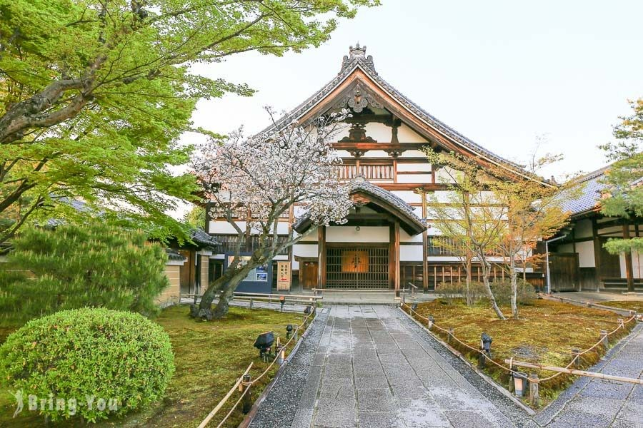
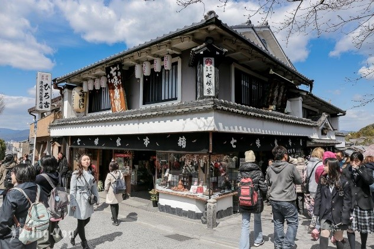

Attraction Features
 Kiyomizu-dera Temple is a temple located in Kiyomizu, Higashiyama District, Kyoto City, Kyoto Prefecture, Japan, founded by the people of Nobu around 778 (the 9th year of the Takarame). Kiyomizu-dera Temple's mountain name is Otowa Mountain, which is mainly dedicated to the Senju Kannon, and originally belonged to the sect of the Hosang-zong, but is now independent and has become the Dahonzan of the Northern Hosang-zong. Kiyomizu-dera Temple, along with Kitayama Rokuen-ji Temple (Kinkaku-ji Temple) and Arashiyama Tenryu-ji Temple, is one of the most famous places of interest in Kyoto, and is crowded with pilgrims and tourists throughout the year. In addition, Kiyomizu-dera Temple is also ranked with temples such as Ishiyama Temple (Otsu City, Shiga Prefecture) and Haseji Temple (Sakurai City, Nara Prefecture), and has been known as a temple dedicated to Kannon since ancient times, and it is also the 16th temple among the 33 temples in the Western Kingdom (visiting 33 Kannon temples in the Kansai region). It has often appeared in Japanese literature since the Heian period. In 1994, Kiyomizu-dera Temple was registered as a World Heritage Site as part of the cultural property of the ancient capital of Kyoto.
Details
 July 10th 7:00 AM Kiyomizu-dera Temple - > Nienzaka - > Sanzaka - > Kiyomizuzaka - > Kodaiji Temple - > Yasaka Shrine. Take the city sightseeing route Loku Bus (100) to Gojozaka Station (about 20 minutes), walk 20 minutes to Kiyomizu-dera Temple, you can visit (1) Kiyomizu-dera Triple Pagoda, which is quite large and colorful and conspicuous in appearance, then walk to Nienzaka no Minato Yatanba Hei and taste a sweetheart (JPY160/1) called Kurokama (2), which is made of the skin of brown sugar yokan and matcha filling, which is very delicious, and there is also Acorn Republic nearby, selling Ghibli animation-related peripherals. Those who are interested can also go together, and then, introduce the famous souvenir shop in Sansaka - Nanami Honpo, especially recommend pepper powder and yuzu powder, both of which are good partners for many people to buy back to China to cook, continue to walk to Shimizuzaka and recommend Shunsho soup tofu, as well as souvenirs - Ikuhachihashi, and finally nearby there are Kodaiji Temple, Yasaka Shrine, Gion, Hanami Koji, etc., and the rest of the attractions are left for tourists to visit and enjoy slowly.